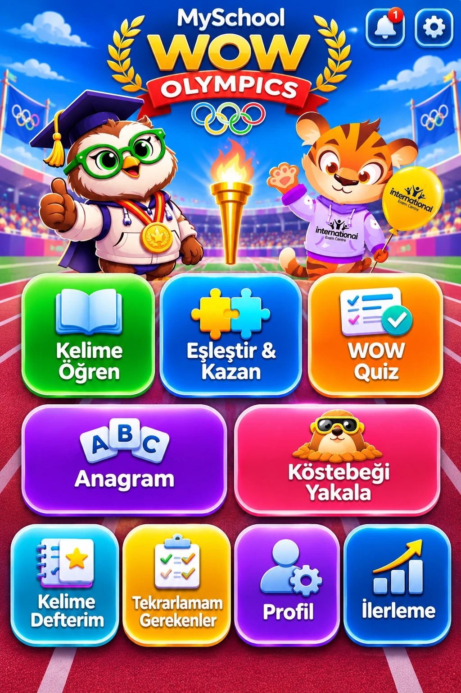

📚 Kelime Öğren
Kelimeler karışık sırayla gösterilir. Oku, dinle ve sonraki kelimeye geç.
🔁 Tekrarlamam Gerekenler
Her kelimeyi üç ayrı tekrar turunda doğru cevapla.
📖 Kelime Defterim
📊 İlerleme · Pre A1
Görülen Kelimeler
Oyunlarda en az bir kez sorulan farklı kelimeler.
Öğrenilen Kelimeler
Üç farklı oyun oturumunda doğru bilinen kelimeler.
👤 Profil
Uygulama: My School WOO – Word Of Olympics
Seviye: Pre A1 (sabit)
Kelime sayısı:
Oyunlar: Eşleştir & Kazan, WOW Quiz, Anagram, Köstebeği Yakala
Oyun süresi: Sınırsız
İlerleme bu cihazın tarayıcı belleğinde saklanır. Tarayıcı verilerini silmek kayıtları da silebilir.